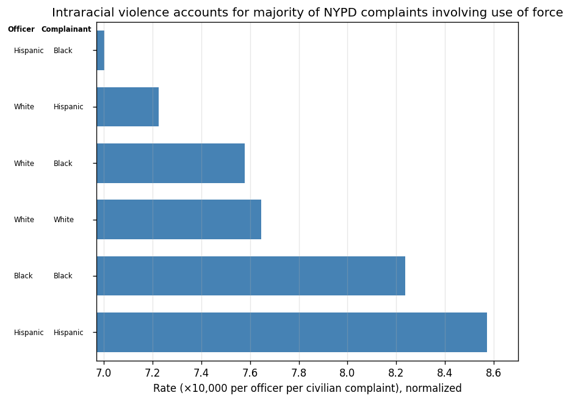
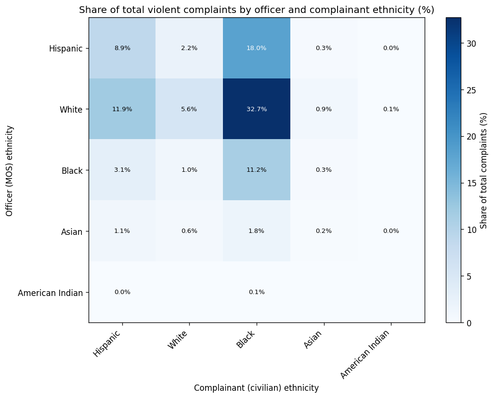

Assignment 4 | 6.C85 Vis & Society
Carmel Schare (schare@mit.edu) 5 Mar 2026 (1 late days used)
Dataset
I used the CCRB dataset from ProPublica. I decided to focus on a sensitive issue: the racial bias in police brutality. Invoking harmful myths and stereotypes about racial violence, I made the following proposition:
Violent complaints occur more often between officers and civilians of the same race/ethnicity.
FOR the Proposition

Design Decisions and Rationale:
- By normalizing over ethnicity by number of complaints (rather than census population data), I hide the dramatic differences in absolute numbers of complaints and how disproportionate they are to population. Thus the entire visualization is basically a statistical trick, not reflecting underlying reality. Deception: -2.
- I obfuscate further by simply labeling it as “normalized” without explaining the process. Deception: -1.
- I arbitrarily select the top 6 data points and exclude data points with unreported ethnicities, which allows me to abuse the axis scale even more aggressively (since the rate of complaints is much lower among other ethnicities). On the other hand, the absolute number of American Indian and Asian officers is so low that it skews the data, so it is arguably reasonable to exclude those categories. Deception: -1.
- By arbitrarily scaling the axis so that the lowest number is small but not 0, the viewer is less likely to question the scaling. Deception: -1.
- I present the data cleanly and simply, with just one information channel and sorted by rate, and the y-axis is helpfully labeled with the category (in this case the ethnicities of the officers and complainants). Deception: +2.
- I give a title to the visualization that announces the claim I draw from the data. Deception: +2.
AGAINST the Proposition

Design Decisions and Rationale:
- Instead of normalizing over the number of complaints by ethnicity, I show the share of total complaints. This is less misleading (see reasoning above). Deception: +1.
- I would have preferred to use a spatial channel to represent complaints, but due to the nature of the data where we are comparing the ethnicities (a nominal category) of a pair of parties, a heatmap makes more sense, so I use color. Admittedly a heatmap is a less common visualization format for the layman, but I think this visualization is simple and persuasive. Deception: +2.
- Using absolute numbers of complaints would show the same trend, but by making it a share of complaints we anticipate and avoid the criticism that the absolute numbers are misleading due to the different population percentages. Deception: +2.
- I use more ethnic categories to show the more complete picture, which has the benefit of making the White-Black data point stand out more dramatically. This is a persuasive choice and it supports my claim but I wouldn’t call it deceptive, because it is more honest to include the complete data instead of arbitrarily excluding certain categories or just selecting the top 6 data points. However, I still exclude the data points where we don’t have ethnicity data or where the ethnicity is “Other”. Deception: +1.
- I use a more neutral title that communicates what I am showing, without priming the viewer to interpret the data in a certain way. I let the data stand for itself, because the trend is very clear. I put more specific claim/observation in the image caption. Deception: +2.
Final Reflection
This assignment I focused less on creating a very beautiful or creative visualization and instead stuck with very standard chart types but I did subtle manipulations to the data and presentation in order to communicate very different messages with the same underlying data. It was difficult to find good ways to visualize this specific aspect of the data because it has to do with data points that have three values: two ethnicities and the number of instances of complaints involving parties whose ethnicities fall into those categories.
I chose this particular proposition because I am aware of the racist rhetoric around “Black-on-Black crime” and I wanted to explore how someone might take data that, at first glance as I saw in my explorations, clearly shows a racist trend where police brutality in NYC is disproportionately committed by White officers against Black civilians, and manipulate it to serve the intraracial violence narrative. There is sober truth to the intraracial violence narrative—“opportunity theory” says that both crime and law enforcement abuse tend to stay within racial categories because of the continuing physical segregation of people—but this data does seem to suggest otherwise. I was surprised to find how easy it was to get the desired “FOR” visualization to emerge just with a bit of plausibly reasonable transformations, the kind of statistical moves I might make intuitively while exploring the data.
As I wrote in the one of the reading group responses, I’m suspicious of the notion of ethics in visualization; I am not sure I believe there is such a thing as true or false visualizations, though I do believe visualizations can be deceptive and misleading. (For instance, we can certainly say that it is deceptive and inappropriate to manufacture statistical results that reflect only the transformation process and not any meaningful features of the data, and pass them off as genuine insights.) Essentially I subscribe to the Bruno Latour school of philosophy of science. Visualization is communication, is performance. Yesterday I attended the Compton Lecture given by Jonathan Haidt, a cultural psychologist who used many many visualizations to weave a narrative about declining mental health and sociality among global youth due to phone usage and social media. He anticipated and responded to objections like that the trends might be correlative and not causal, but I found myself caring not so much about whether I believe in the scientific validity of the data or how it is visualized, because I intuitively know it to be true, and I felt that his presentation, with its ample visual aids, was a very effective way to tell the story of a society in crisis. In fact, he made a comment along these lines during the lecture, saying that correlative analysis is just one of the ways he studies the phenomena in question, and another method involves asking people to self-report their experiences and articulate what they believe the problem is; his point being that people on the ground actually victimized by these problems are the best people to ask what is going on and what is the cause. That is to say I think it is dangerous to assume that there exist generalizable “ethical practices” in analysis in visualization that, if followed scrupulously, will ensure we do not mislead or cause harm. I explained how my “FOR” visualization, which I believe to be much more deceptive and unethical, could have emerged from standard statistical practices done carelessly. It is precisely when we hubristically believe in our imperviousness to bias that we become careless and engage in unethical behavior. The solution is to be constantly aware and self-critical of our practices and, perhaps more importantly, what message we are trying to convey. Even supposedly neutral, scientific activity carries with it politics and bias. In fact it is often the very dogma of impartial rationality that gets used as a cudgel against criticism. In the quest for persuasive, non-deceptive communication of the truth, the most powerful tool we have at our disposal is convention. Deceptive rhetoric thrives in underspecified forms. We break convention for three reasons: to make it possible to communicate that which has never been communicated before, to surprise and to shed new light via new perspectives on a familiar question, and to confuse audiences into believing a false story. Thus diversions from form should be regarded with suspicion, and effective critique can illuminate the reason for it.